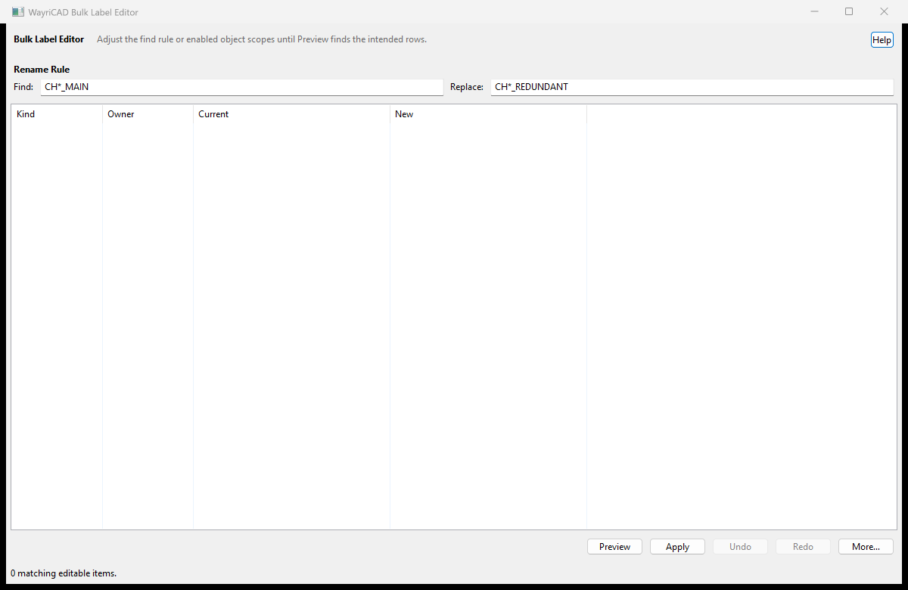

Earlier native capture retained for reference; 3.6.37 adds the net browser and revised controls described here.
Browse text and electrical nets on the originating PCB. Preview text changes before applying them.
| Input | Meaning |
|---|---|
| clock | Case-insensitive substring. |
| BUS[*] | Wildcard inside literal bus brackets; ? matches one character. |
| ~clok | Opt-in bounded fuzzy matching. |
Select multiple net rows, then Select nets on PCB. The previous selection is replaced by those nets' pads, tracks, vias and zones. Double-click also locates selected rows. Named unused nets remain listed. Reload PCB and nets reads fresh editor data. Copy names or export the visible table as a new CSV file.
Nets are read-only electrical identities. Rename electrical labels in Schematic Editor and use Update PCB from Schematic. Changing a PCB drawing string does not rename a net. This plugin has no schematic-editor action. PCB reference/value edits do not propagate to the schematic automatically.
| Mode | Find | Replace |
|---|---|---|
| Whole-field wildcard | CH*_MAIN | PORT*_MAIN |
| Single character | CH?_MAIN | CH?_REDUNDANT |
| Regex | ^R(\d+)$ | X\1 |
Each replacement * or ? consumes the next capture of the same kind. Wildcard bus brackets are literal. Regex follows Python rules. Invalid expressions or replacements produce an actionable status. References and PCB text are enabled initially; values and custom fields are opt-in. Built-in fields are not duplicated as custom fields.
Selected footprints only uses footprint UUIDs, so duplicate reference strings do not expand the scope. Free board text is excluded in this mode. Sort table headers, then select rows; row identity follows sorting. No write occurs until Apply. Changing the rule invalidates the previous preview.
Apply rereads objects and old values, rejects blank text and new duplicate references, and checks fresh board values after writes. Failed batches attempt recovery; incomplete recovery is reported. This is session history, not persistent cross-session undo. Routing, pads, zones and net assignments are not edited.
wayricad tools run bulk-label-editor -- nets C:/Projects/Example/board.kicad_pcb --search "BUS[*]" --output nets.json
wayricad tools run bulk-label-editor -- preview CH1_MAIN --find "CH*_MAIN" --replace "PORT*_MAIN"
Saved-board reading requires KiCad Python/pcbnew. Data-only preview and help do not. Existing --request JSON automation remains supported. CLI reports never write a design and preserve existing report files.
See the README for methods, references and acceptance limits.